DSP-BASED MULTIPLIER
Dedicated DSP48E1 resources with pipelining for high-speed arithmetic.
PROJECT 02
MAR 2025 — JUL 2025
FPGA · VHDL · LOW-POWER DIGITAL DESIGN
Design and implementation of a low-power 32-bit arithmetic processing unit on a Spartan-7-based Boolean FPGA board, evaluated across power, resource utilization, timing and real-time hardware operation.
The project focused on implementing multiplication and division efficiently on a resource-constrained FPGA platform, balancing speed, power consumption and hardware resources.
Dedicated DSP48E1 resources with pipelining for high-speed arithmetic.
Signed multiplication using Booth encoding to reduce arithmetic operations.
Partial-product reduction through layers of full and half adders.
Iterative conditional addition/subtraction for sequential binary division.
These are the project figures from the submitted technical paper, shown directly rather than recreated.
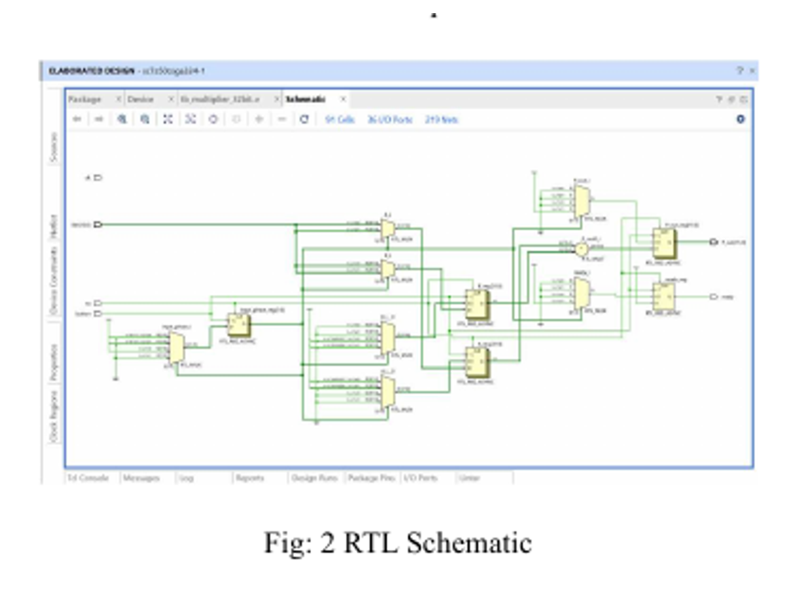
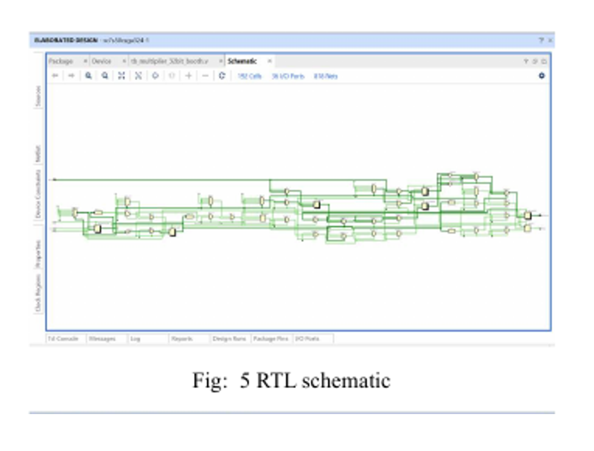
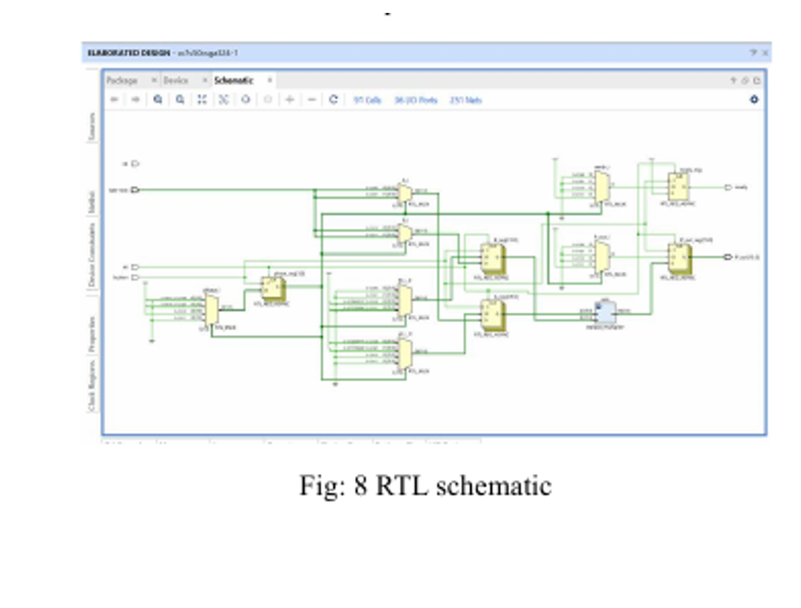
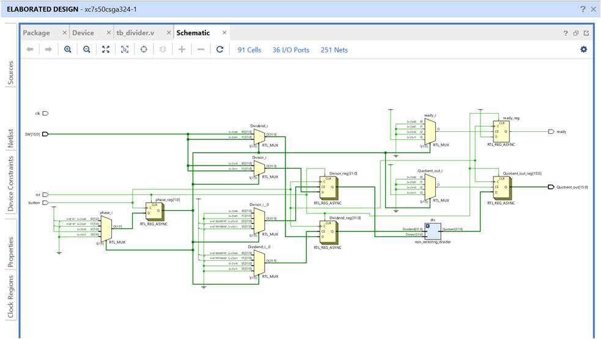
Because of the board's limited I/O, operands are entered in 16-bit segments using push buttons, while the lower 16 bits of the result are displayed through onboard LEDs.
Vivado simulation was used to verify the multiplier and divider across 32-bit
operand combinations. The paper reports correct products/quotients and a
completion ready signal.
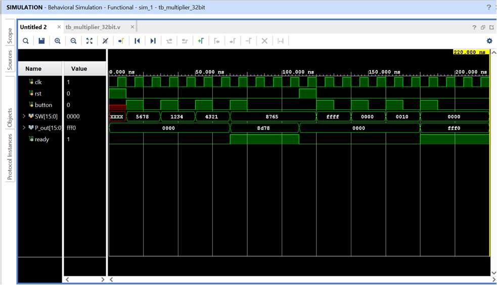
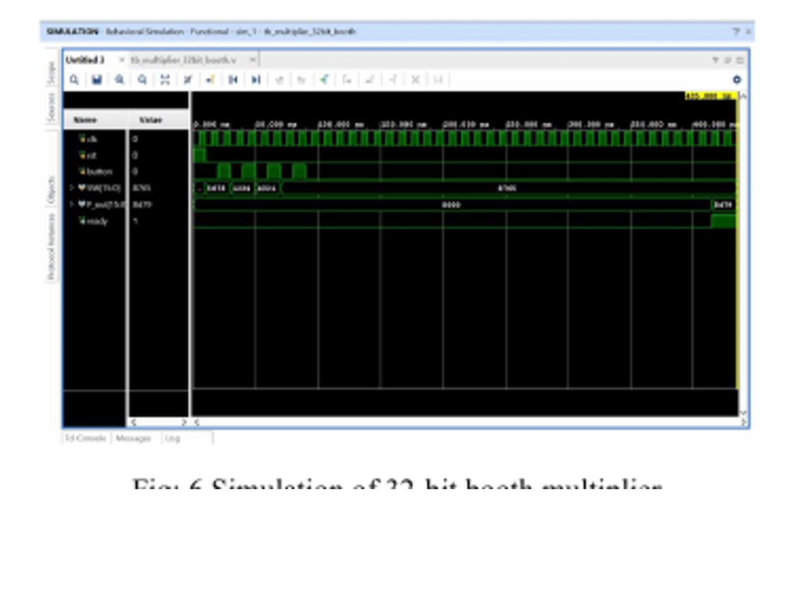
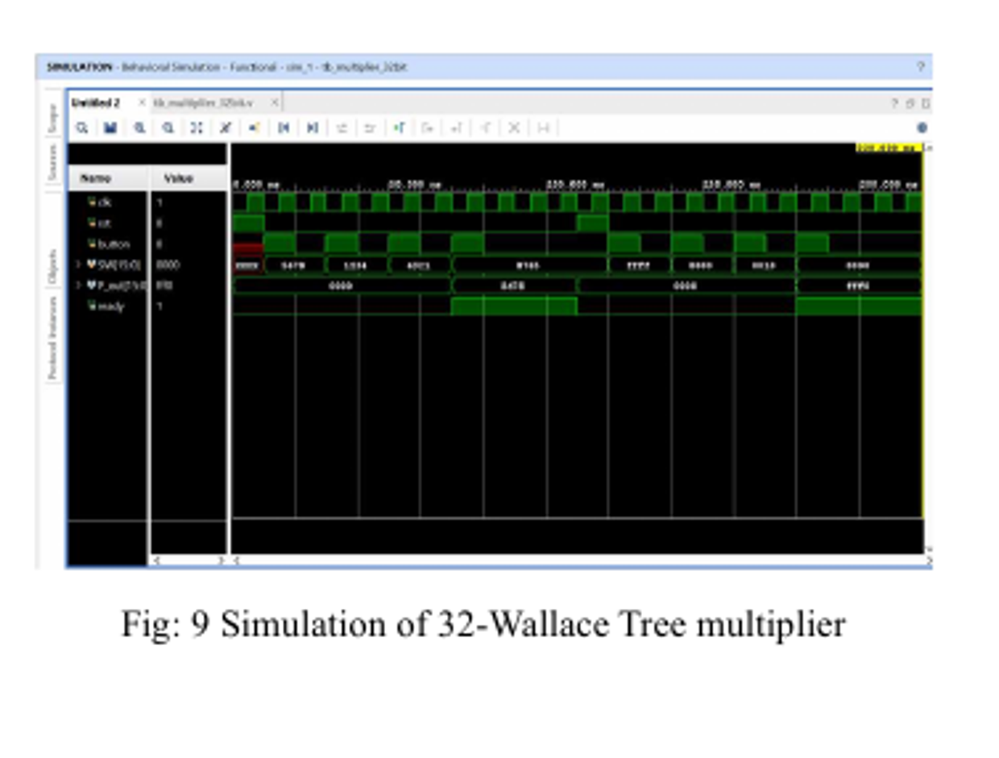
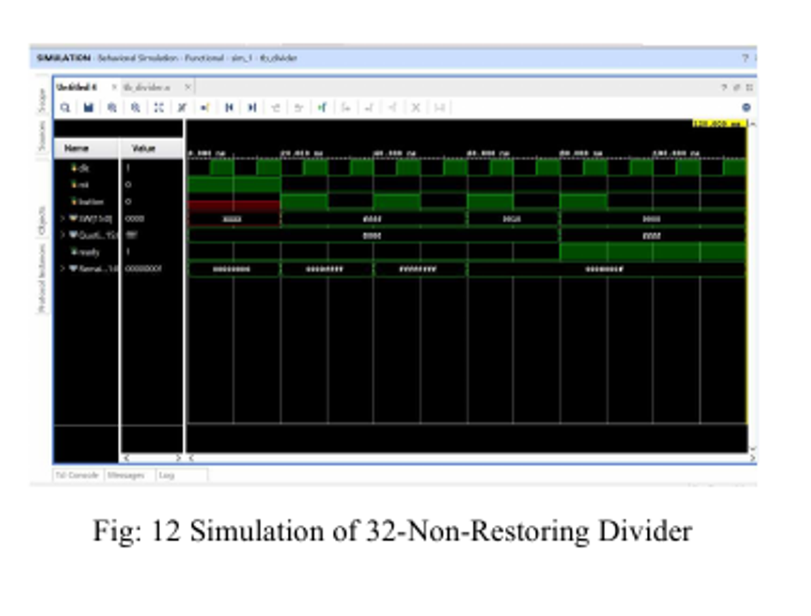
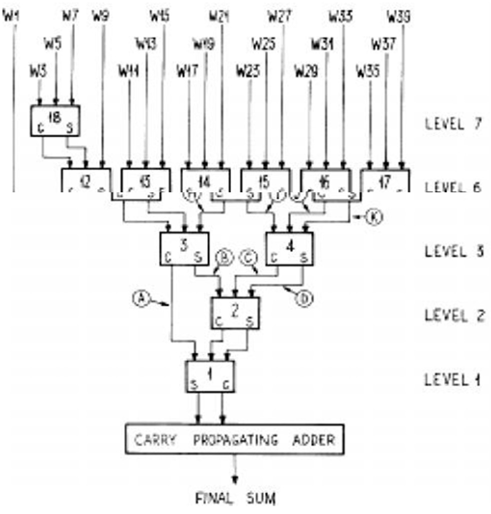
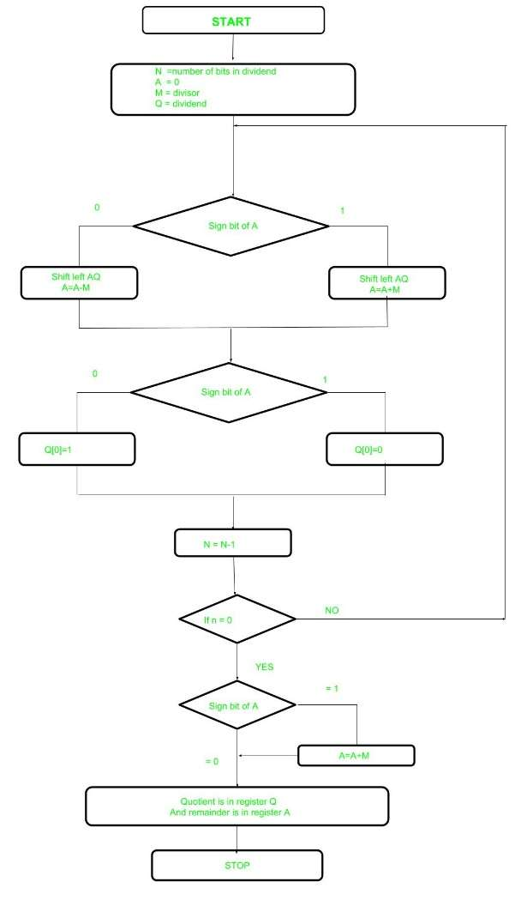
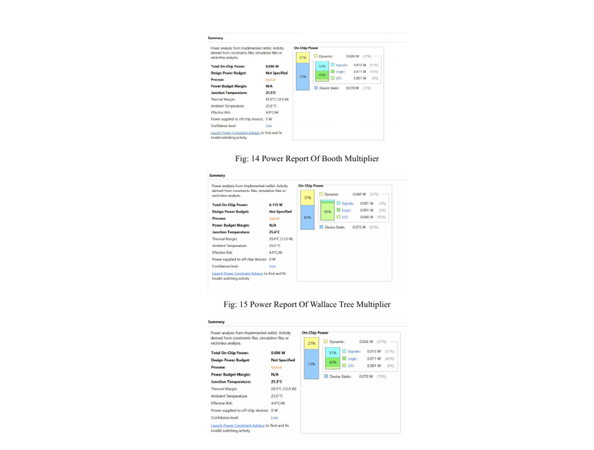
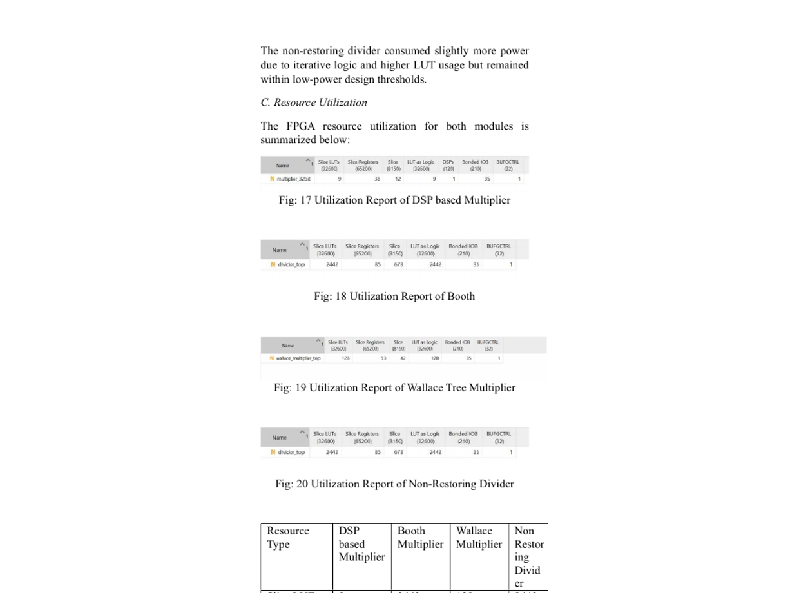
The reported results show the DSP-based multiplier achieving the lowest power among the compared multiplier architectures, while the non-restoring divider maintained low power without using DSP slices. Both designs met the 100 MHz timing constraint with no critical-path violations.
The designs were simulated using the Vivado Simulator and then subjected to hardware implementation and timing analysis on the FPGA platform.
PROJECT TAKEAWAY
Architecture, power, area and timing were treated as one engineering problem, rather than four separate checkboxes.
← BACK TO WORK